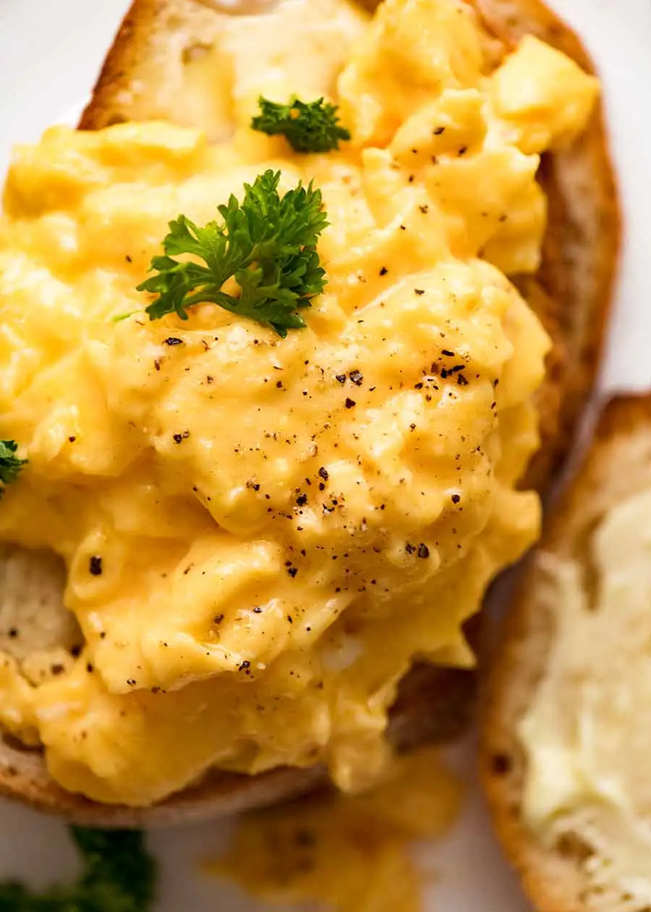

Scrambled Eggs!

Description
Scrambled eggs are my all time favorite. It is my comfort food even!
Making scrambled eggs with the right consistency is very important and
this recipe will educate you.
Ingredients
- Eggs (>=2)
- Butter (Butter goes best)
- Salt and Pepper (if needed)
Author's Notes:
I prefer my eggs to be cooked without salt as I
enjoy my eggs bland :D
Steps
- Crack the eggs into a bowl and whisk them until the mixture looks pale yellow and a little frothy.
- Grease the pan with some butter and heat until bubbles are seen.
- Make sure the pan is kept at low flame.
- Pour in the whisked eggs and let it cook for about 40 seconds.
- With a spatula, scramble the eggs little by little. Continuously scrambling the eggs would
make small, finely scrambled eggs. Scrambled eggs must be edible sized.
- Turn off the stove before your eggs are entirely cooked.
- Allow the scrambled eggs to cook in the heat of your pan alone.
- Transfer the eggs to a plate before it is entirely cooked. Enjoy those creamy scrambled eggs!